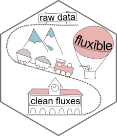
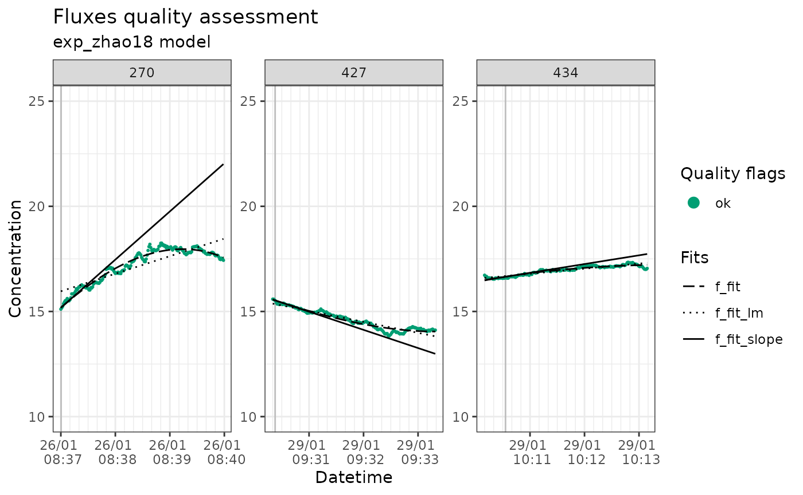

Transforming gas concentration in volumetric units before modelling the fluxes
Source:vignettes/vol_conc.Rmd
vol_conc.RmdGas concentration is typically measured in fractional units (e. g., ppm) by gas analysers. When calculating the fluxes, the temperature, pressure, and gas constant are used to transform the flux in a volumetric concentration (e.g., mmol/l). Since the temperature might be changing over time during the measurement, the average is usually used in that calculation.
From fluxible 1.4.0, it is possible to transform each
gas concentration datapoints in volumetric units before modelling the
slope, and calculating the flux. This accounts better for temperature
changes in the chamber, typically in hot climate, but requires more
temperature measurements during the flux measurements.
This vignette is showing this pathway with a sample dataset from the NatuRA project in the Drakensberg in South Africa. CO2 concentration was measured every second with an LI7810, air temperature inside the chamber also every second, and the atmospheric pressure daily average was retrieved from a nearby weather station.
library(tidyverse)
conc_df <- read_csv("ex_data/sample_vol_conc.csv")
head(conc_df)
#> # A tibble: 6 × 7
#> CO2 datetime temp_air f_start f_fluxid
#> <dbl> <dttm> <dbl> <dttm> <dbl>
#> 1 376. 2026-01-26 08:37:00 27.2 2026-01-26 08:37:00 270
#> 2 377. 2026-01-26 08:37:01 27.1 2026-01-26 08:37:00 270
#> 3 379. 2026-01-26 08:37:02 27.1 2026-01-26 08:37:00 270
#> 4 382. 2026-01-26 08:37:03 27.1 2026-01-26 08:37:00 270
#> 5 384. 2026-01-26 08:37:04 27.1 2026-01-26 08:37:00 270
#> 6 386. 2026-01-26 08:37:05 27.1 2026-01-26 08:37:00 270
#> # ℹ 2 more variables: f_end <dttm>, atm_press <dbl>We can now transform the concentration in volumetric units with the
flux_conc function. Because the CO2 was measured
in ppm, the volumetric concentration will be in µmol/l.
library(fluxible)
conc_df_vol <- flux_conc(
conc_df,
CO2,
temp_air,
atm_press
)
head(conc_df_vol)
#> # A tibble: 6 × 8
#> CO2 datetime temp_air f_start f_fluxid
#> <dbl> <dttm> <dbl> <dttm> <dbl>
#> 1 376. 2026-01-26 08:37:00 27.2 2026-01-26 08:37:00 270
#> 2 377. 2026-01-26 08:37:01 27.1 2026-01-26 08:37:00 270
#> 3 379. 2026-01-26 08:37:02 27.1 2026-01-26 08:37:00 270
#> 4 382. 2026-01-26 08:37:03 27.1 2026-01-26 08:37:00 270
#> 5 384. 2026-01-26 08:37:04 27.1 2026-01-26 08:37:00 270
#> 6 386. 2026-01-26 08:37:05 27.1 2026-01-26 08:37:00 270
#> # ℹ 3 more variables: f_end <dttm>, atm_press <dbl>, f_conc_vol <dbl>Now we do the model fitting, quality check, and plotting as usual.
fit_df <- flux_fitting(
conc_df_vol,
f_conc_vol,
datetime
)
quality_df <- flux_quality(
fit_df,
f_conc_vol,
ambient_conc = 18, # approx ambient CO2 concentration at 20°C in umol/l
error = 4 # this one also needs to be adapted
)
flux_plot(
quality_df,
f_conc_vol,
datetime,
f_ylim_upper = 25, # default values are for ppm
f_ylim_lower = 10
)
Then we can calculate fluxes with flux_calc. We still
input the columns atm_press and temp_air, to
get them averaged per fluxes. They are however not used in the flux
calculation since this was done with flux_conc already.
fluxes <- flux_calc(
quality_df,
f_slope,
datetime,
temp_air,
conc_unit = "umol/l", # notice the units change
flux_unit = "umol/m2/s",
setup_volume = 125,
atm_pressure = atm_press,
plot_area = 0.25,
cut = FALSE
)
str(fluxes)
#> tibble [3 × 7] (S3: tbl_df/tbl/data.frame)
#> $ f_fluxid : num [1:3] 270 427 434
#> $ f_slope : num [1:3] 0.03818 -0.01441 0.00693
#> $ f_temp_air_ave : num [1:3] 28.2 27 19
#> $ f_atm_pressure_ave: num [1:3] 0.991 0.99 0.99
#> $ datetime : POSIXct[1:3], format: "2026-01-26 08:37:00" "2026-01-29 09:30:20" ...
#> $ f_flux : num [1:3] 19.09 -7.2 3.46
#> $ f_model : chr [1:3] "exp_zhao18" "exp_zhao18" "exp_zhao18"